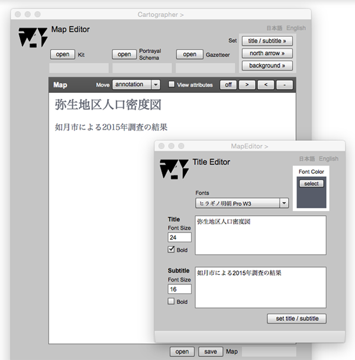

Title Editor
はじめに
このページは，地図の表題と副題を設計するためにあります．地図の表題は，地図の目的を表す，端的なフレーズで示します．表題はとても大切な地図要素ですので，事前に十分検討すべきです．副題はなくてもいいのですが，地図の内容や，作成者など，不足的な説明を，短いフレーズで表現します．表題や副題は，名詞や代名詞で終わる体言止めのフレーズにするといいでしょう．
Title editor

図１．表題設計用のページ（Title Editor）と，地図上への表題／副題の表示（例）
FIELDS
Font Color
selectボタンを押して，フォントの色を指定すると，そのサンプルが表示される．
Fonts (選択可能)
フォントの種類を一覧から選択する．
Title (編集可能)
表題をここにキーインする．
Font Size(Title) (編集可能)
フォントのピクセルサイズをここにキーインする．
Subtitle (編集可能)
副題をここにキーインする．
Font Size (Subtitle) (編集可能)
フォントのピクセルサイズをここにキーインする．
BUTTONS
select
このボタンを押すと，color selectorが表示されるので，色の選択ができる．
Bold (Title)
フォントを太字にするときは，ここをチェックする．
Bold (Subtitle)
フォントを太字にするときは，ここをチェックする．
set title / subtitle
表題及び副題を地図状に表示する．地図上の表示位置は，Map Editor上で変更できる．
日本語
今あなたが読んでいるドキュメントが表示されます．
English
You can read the tutorial written in English.